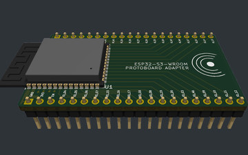
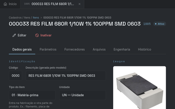
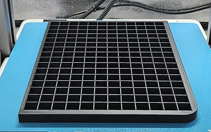
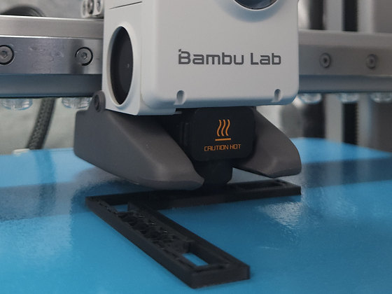
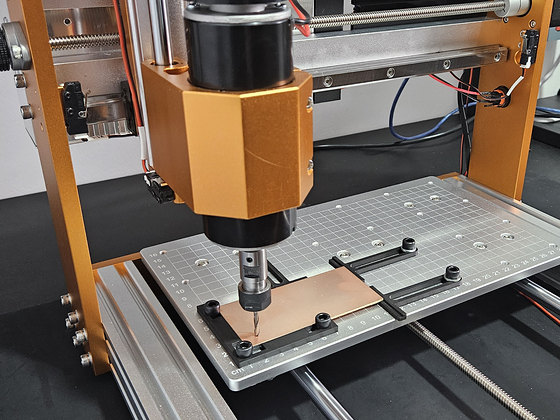
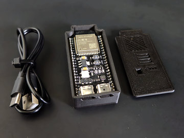
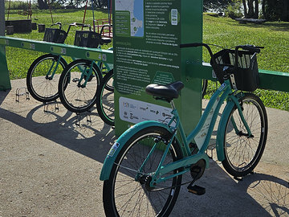
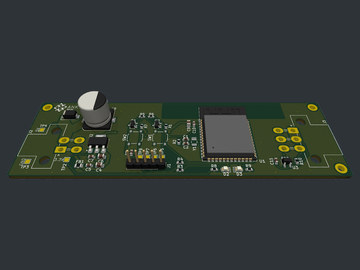
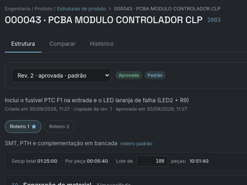

Sistemas embarcados
Firmware feito sob a demanda do seu projeto. Avaliamos as restrições, sugerimos a arquitetura que faz mais sentido para o caso e decidimos junto com você. O código-fonte e a documentação vêm na entrega.
pesquisa e desenvolvimento
Desenvolvemos sistemas embarcados, software de alto nível e protótipos físicos — com impressão 3D paramétrica e placas de circuito usinadas na nossa própria bancada.
o que fazemos
As três trabalham no mesmo lugar do sistema: a camada que precisa estar certa para que tudo o que está acima dela funcione.

Firmware feito sob a demanda do seu projeto. Avaliamos as restrições, sugerimos a arquitetura que faz mais sentido para o caso e decidimos junto com você. O código-fonte e a documentação vêm na entrega.

Automação de processos digitais, integração entre sistemas e aplicações sob medida, para empresas de qualquer porte.

Protótipos funcionais para descobrir se a ideia fecha — viabilidade, custo e limites de projeto — antes de investir na produção em série. Peças em impressão 3D paramétrica e placas de circuito usinadas aqui mesmo.
Ver como prototipamosprototipagem
Imprimimos as peças e usinamos as placas do protótipo aqui dentro. Cada iteração sai sem esperar fornecedor — e o risco aparece cedo, enquanto ainda é barato mudar.

impressão 3D
Modelamos cada peça de forma paramétrica: dimensões, folgas e encaixes são variáveis do projeto, não medidas presas no desenho. Mudou a placa, o sensor ou o conector? Ajustamos o parâmetro e a peça nova sai da impressora.

usinagem de PCB novo
Usinamos as placas de circuito do protótipo direto na bancada. O circuito é montado e testado sem esperar a fabricação, e a placa só segue para a produção industrial depois de provada.
por que cerne
O sistema que comanda a máquina, o processo que sustenta a rotina, o software que orienta a decisão. É a camada que quase nunca aparece — e que, quando falha, para tudo o que está em cima dela.
É nela que trabalhamos. O nome vem daí: cerne é o núcleo, o centro do qual tudo depende. E o mesmo princípio guia como tocamos um projeto — escopo escrito antes de começar, entregas que você consegue verificar ao longo do caminho e, no fim, o código-fonte e a documentação na sua mão.
projetos
Projetos entregues para a indústria e para a mobilidade urbana — do firmware embarcado à visão computacional, além da plataforma que usamos para tocar a nossa própria produção.
clientes Flesch Tech Conecta

sistemas embarcados
Solução embarcada para ambientes industriais que permite inserir e gerenciar informações nos equipamentos usando periféricos comuns, como teclado e mouse — uma interface prática para operações que pedem mais flexibilidade na interação com a máquina.
visão computacional e IA
Máquina que inspeciona módulos eletrônicos com visão computacional e inteligência artificial. Automatiza etapas da inspeção, aponta possíveis falhas e aumenta a qualidade e a confiabilidade dos produtos.

firmware · mobilidade sustentável
Bicicletas compartilhadas para a população de Guaíba, facilitando o acesso ao transporte alternativo e incentivando hábitos mais saudáveis e sustentáveis. O firmware embarcado é o que garante uma experiência de uso prática e confiável.
Conheça o Pedal Sustentável
automação industrial
Coleta de materiais guiada por sinalização luminosa: indicações visuais orientam o operador na separação dos itens, deixando o processo mais rápido e preciso e reduzindo erros.

plataforma própria em desenvolvimento
Nossa plataforma para centralizar as operações de P&D. Padroniza e integra a produção de protótipos — da organização dos projetos ao acompanhamento da fabricação de peças impressas em 3D e módulos eletrônicos — com controle dos processos e visão completa da fabricação.
como trabalhamos
A ordem existe para que o risco técnico apareça enquanto ainda é barato resolver.
Entender o problema, as restrições e o que conta como pronto. O escopo fica escrito antes de escrevermos qualquer linha de código.
Construímos o menor sistema capaz de mostrar que a solução funciona, com os riscos técnicos medidos e postos na mesa.
Trabalho em ciclos, com algo verificável no fim de cada um. Você acompanha o tempo todo — nada de surpresa só no final.
Você recebe o código-fonte, a documentação e o conhecimento para operar e evoluir o sistema sem depender da gente.
contato
Respondemos com uma avaliação de viabilidade e uma proposta de escopo, sem custo nenhum.